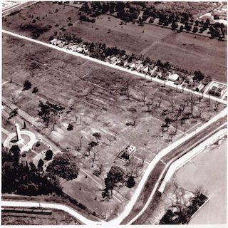
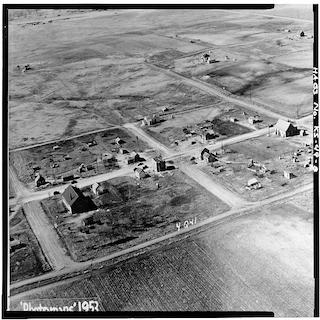
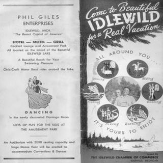
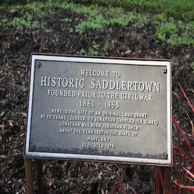

BLACK
TOWN
MAP

Africatown, Alabama. Julie Bennett, AP Images

Nicodemus Historic District, Graham County, KS. Library of Congress

Fazendeville, LA (1960). Louisiana National Guard

Aerial View of Nicodemus (1953). Library of Congress

"Come to Idlewild" Brochure (1955). Ronald Stephens Collection

Map of New Philadelphia, IL. Image by Free Frank New Philadelphia Historical Society

Saddlertown, NJ Historical Marker
Angola, FL Historical Marker. Image by Reflections of Manatee
About
Methods
Contact